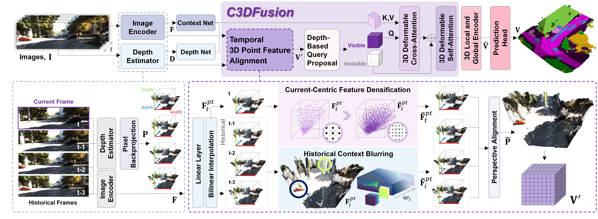
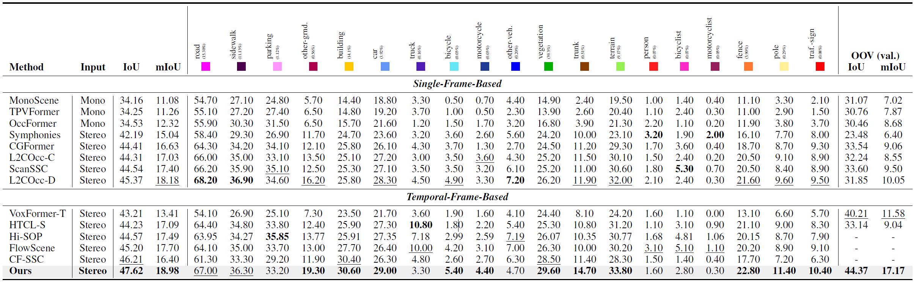
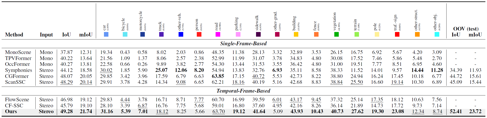

Towards Temporal Fusion Beyond the Field of View
for Camera-based Semantic Scene Completion
Overview
An overview of our model, highlighting the proposed C3DFusion. The symbol ‘⊕’ denotes feature concatenation.
Abstract
Recent camera-based 3D semantic scene completion (SSC) methods have increasingly explored leveraging temporal cues to enrich the features of the current frame. However, while these approaches primarily focus on enhancing in-frame regions, they often struggle to reconstruct critical out-offrame areas near the sides of the ego-vehicle, although previous frames commonly contain valuable contextual information about these unseen regions. To address this limitation, we propose the Current-Centric Contextual 3D Fusion (C3DFusion) module, which generates hidden region-aware 3D feature geometry by explicitly aligning 3D-lifted point features from both current and historical frames. C3DFusion performs enhanced temporal fusion through two complementary techniques—historical context blurring and currentcentric feature densification—which suppress noise from inaccurately warped historical point features by attenuating their scale, and enhance current point features by increasing their volumetric contribution. Simply integrated into standard SSC architectures, C3DFusion demonstrates strong effectiveness, significantly outperforming state-of-the-art methods on the SemanticKITTI and SSCBench-KITTI-360 datasets. Furthermore, it exhibits robust generalization, achieving notable performance gains when applied to other baseline models.
Visual comparison of our model against other recent camera-based methods on the SemanticKITTI validation set.
Quantitative Results
SemanticKITTI hidden test set
Table 1: Quantitative results on SemanticKITTI hidden test set. ‘OOV’ on the right indicates performance on out-of-view regions, evaluated on the validation set using our implementation. Bold / underline highlight the best / second-best, respectively.
SSCBench-KITTI-360 hidden test set
Table 2: Quantitative results on SSCBench-KITTI-360 test set. ‘OOV’ on the right indicates performance on out-of-view regions, evaluated on the test set using our implementation. Bold / underline highlight the best / second-best, respectively.
Poster
BibTeX
@misc{bae2025temporalfusionfieldview,
title={Towards Temporal Fusion Beyond the Field of View for Camera-based Semantic Scene Completion},
author={Jongseong Bae and Junwoo Ha and Jinnyeong Heo and Yeongin Lee and Ha Young Kim},
year={2025},
eprint={2511.12498},
archivePrefix={arXiv},
primaryClass={cs.CV},
url={https://arxiv.org/abs/2511.12498},
}